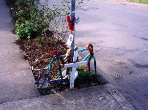

I never met Matthew Schekel, but I rode on the Critical Mass that served as his memorial ride, and I pass the spot where he was killed whenever I'm nearby - SE 37th and Taylor in Portland. The bike and helmet that he was using when he died are there as part of a memorial.

I don't think that it's my place to use Matthew as a figurehead for my personal cycling program, since I don't know what he'd think about it. On the other hand, this happened to him in my neighborhood, while he was doing something that I do there every day. Surely everyone who is trying to make the world a little less fucked-up has a right to point out how fucked-up things really are.
Matthew was killed for the stupidest reason in the world. He was riding through an intersection where the cross-traffic had a stop sign, and he didn't. A Sheridan Fruit truck was going the other way. The driver didn't stop, claims that he didn't see him, and that was looking for cars, not cyclists. Matthew was killed on the spot.
He died because it was business as usual for that truck driver. You've seen it everywhere - many drivers prefer to save a few seconds of travel time, even if it means some unlucky person might get killed. This driver was charged with reckless driving, with a maximum fine of 300 dollars.
I remember that whenever I'm riding down Hawthorne, a four lane street two blocks from Taylor. I take a lane, because it isn't safe to ride right next to the parked cars. Motorists are often annoyed by this, and every once in a while, I get yelled at to "stop blocking traffic". I am traffic! One guy told me that there were quieter streets a block over - like Taylor - where I should be riding. Why wasn't he on that street? Why should I have to stop at ten stop signs, and stop again at ten more intersections where cross traffic should stop but won't? To save time for some stupid drivers, alone in their cars? Is their time more important than mine? Is their time more important than everyone who gets killed by a careless driver?